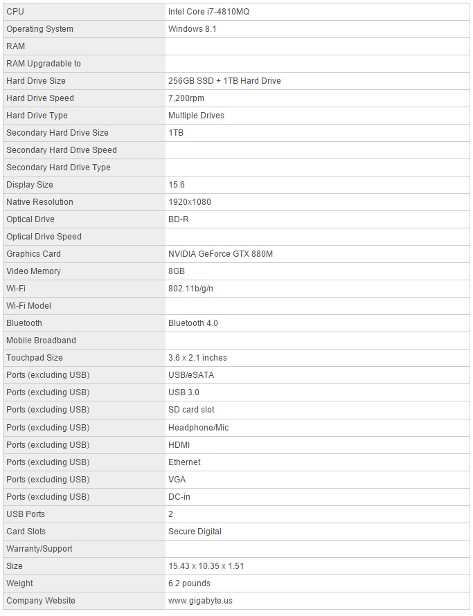
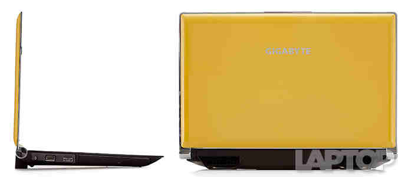
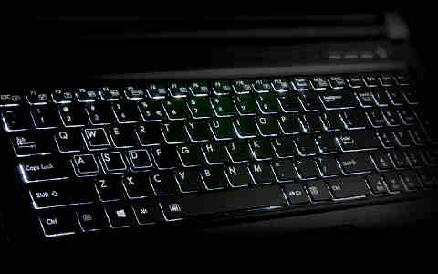

Laptop Lounge
Gigabyte P25X v2

Editor's Rating:
The Pros
Strong gaming performance; Crisp, 1080p screen; Eye-popping design; Strong battery life .
The Cons
Can get hot and noisy; A bit hefty
Verdict
The Gigabyte P25X v2 offers robust gaming performance, complete with a crisp, full-HD display and stylish design.
Specifications
Design
Like a laptop version of the Transformers' Bumblebee, the Gigabyte P25 is a sleek, black-and-yellow machine that opens up into a battle-ready beast. The notebook's smooth, mustard-yellow lid sports an emblazoned silver Gigabyte logo, which is complemented by a layer of premium-looking silver around the edges.
This classy chassis continues on the inside, where you'll find a black, aluminum-brushed deck that houses the island keyboard, below the perforated speaker bar. The laptop's rear edge hosts two massive vents. Combined with the removable battery pack, they look like the exhaust pipes of a stylish sports car.

Make no mistake, the Titan is freaking huge. The 9.9-pound, 17.95 x 13 x 1.9-inch laptop makes the Origin Eon 17-S (8.6 pounds, 16.3 x 11.3 x 1.8 inches) and the Asus G751JY (9.2 pounds, 16.4 x 12.5 x 0.9~1.7 inches) look small by comparison.
Keyboard
The P25 touts a springy set of black chiclet keys, complete with a full number pad on the right and an icy-white backlight beneath. The WASD keys, used for movement in most games, are outlined in white. There are dedicated buttons for volume control and opening the Smart Manager settings menu just above the number pad.
With a 1.8-millimeter travel and an actuation (required pressure) of 65 grams, the keys were satisfyingly snappy with just enough give. The Key Hero typing test reflected this, as I was able to type with 99 percent accuracy at a zippy 95 words per minute, well above my 75 wpm average.
While the mouse is the preferred weapon of choice for most PC gamers, the P25's 3.6 x 2.1 soft-touch touchpad is a smooth and responsive, if small, companion. I had no problem performing touch gestures like swiping left to right to change apps and pinching to zoom, and the lone click button below the touchpad provides a satisfying level of feedback.
Overall Performance
Armed with a 2.8-GHz Intel Core i7-4810MQ processor with 16GB of RAM, the P25 chewed through just about every daily task we threw at it. Even when surfing a dozen Chrome tabs, streaming a movie on Netflix, running BioShock Infinite and performing a full system scan all at once, the gaming notebook carried on without a stutter.
The P25 scored a 14,124 on the Geekbench 3 general performance test, beating the Blade 14 (11,487, 2.2-Ghz Core i7-4702HQ), the GS60 Ghost (12,695, 2.4-GHz Core i7-4700HQ) and the 8,476 category average.
The notebook's 256GB SSD and 1TB, 7,200-rpm hard drive booted Windows 8.1 in a brisk 9 seconds, which just edges out the Blade 14's 256GB SSD (10 seconds) and the GS60 Ghost (11 seconds), which has a 128GB SATA SSD and 1TB, 7,200-rpm hard drive. All three notebooks blazed past the 19.9-second average for mainstream notebooks.